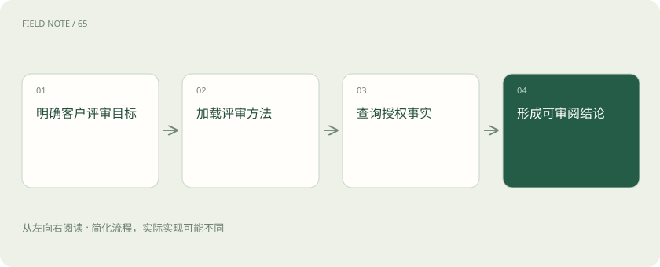
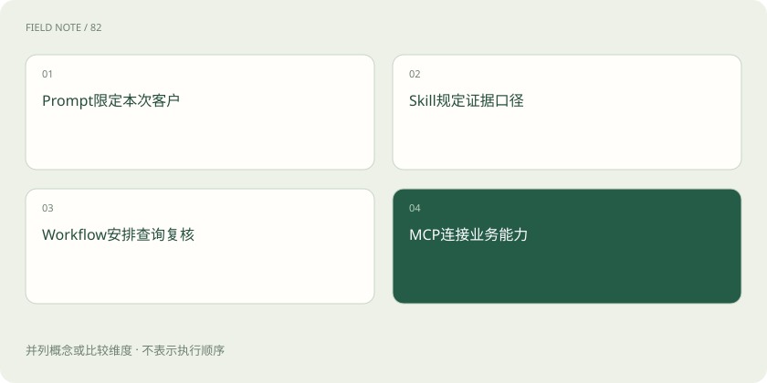
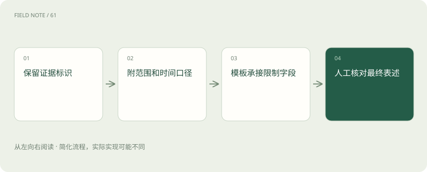

先读哪些知识
先用一个类比理解
类比只帮助建立直觉，不等同于技术的完整机制。
一图看懂

提示表达当前意图
用户提示说明这次要处理哪个客户、哪段时间和什么交付物。它适合承载临时目标，不宜替代长期维护的整套业务规则。
“评审 C17 的续约风险，仅供内部讨论”给出本次边界。技能补充组织采用的评审方法，但不能把内部讨论自动升级成给客户发送邮件或修改销售预测。
当前意图还应明确允许的副作用。生成一份供审阅的报告与更新 CRM 的正式风险标签，需要不同动作；不能因为两者都属于客户评审就默认授权后一项。
技能表达可复用方法
客户评审技能可以规定如何区分事实、推断和待核实项，并规定报告栏目。它使团队方法可重复使用，却不能保证每次判断都正确。
活动减少可能源于假期、数据未同步或真实需求下降。技能应要求把证据与解释分开，避免看到两周无活动就直接宣布客户流失。方法仍需依赖有效输入。
业务方法需要说明反例。活动次数上升也可能是投诉升级，而非关系改善；技能若只给出单向经验法则，模型容易把形式化流程当成事实判断的替代品。
工作流组织执行秩序
工作流决定哪些阶段先后发生、什么条件需要人工处理、何时结束。技能可以描述流程，但具体运行时是否支持暂停、恢复和状态保存，属于实现能力。
例如先取活动，再查工单，最后交由客户经理复核。若产品只会一次性读取说明，就不能承诺审批三天后自动继续；持久化能力需要另行验证。
顺序控制应考虑数据依赖。若未解决工单数量取自旧快照，而活动来自实时查询，流程虽然按顺序执行，仍可能把不同时点的数据拼成一幅并不存在的业务状态。
图解：客户评审的职责组合

MCP 提供可调用接口
MCP 工具为 CRM、工单或报表系统提供标准交互入口。技能可以说明何时选用这些工具，却不能靠写出工具名称就让服务实际存在。
客户评审需要活动查询和未解决工单查询。如果只接入 CRM，没有工单工具，交付应明确资料缺口，不能把“没有查到工具”写成“客户没有工单”。
接口存在也不等于字段能满足评审。例如工具只返回工单标题而不返回状态，就无法计算未解决数量。应在组合设计时检查信息需求与工具结果是否真正对应。
完整评审案例
用户要求比较 C17 上季度与本季度的活动变化。技能先核对区间、再要求查询同一访问范围内的活动，随后整理未关闭工单，最后输出观察与待确认项。
若本季度活动从八次降到三次而工单未解决数上升，可提出关注信号；必须同时注明观察窗口尚未结束。对不同长度窗口直接比较次数，会制造虚假的恶化结论。
风险结论应指出可改变判断的补充证据。例如如果下周客户确认采购计划，当前负面信号可能减弱。这样的条件描述让客户经理能采取行动，也避免把暂时观察固化为标签。
多技能需要明确交接
一个技能负责分析，另一个负责报告排版时，应约定交接对象包含哪些事实、引用和不确定性。否则排版阶段可能为了让文字流畅而删除关键限定条件。
例如分析结果中的“当前员工可见范围”必须进入最终报告。报告模板若只有肯定结论栏，应调整模板或增加说明，不能让格式要求覆盖事实完整性。
交接时应保留证据标识而不只传摘要。摘要可能遗漏少量相反活动，后续阶段若能追溯来源，就可以在需要时核对；否则组合链越长，事实损失越难发现。
冲突与缺口需要显式处理
两个技能可能给出不同时间口径或交付要求。执行者应依据当前用户目标和适用规则解决，无法确定时保留缺口，而非任意混用。
续约评审采用自然季度，销售预测采用财务季度；引用两种资料前必须标明口径。技能越多并不自动意味着能力更强，重叠指令也可能增加判断成本。
当用户明确指定某一方法时，也要确认其适用范围。客户评审与合同法律审查面对不同问题，不能让一个技能因为名称相近就跨越专业边界作出未经支持的判断。
图解：分析向排版交接

组合验收看责任边界
评估组合时分别检查方法选择、数据获取、业务判断和最终呈现。报告看起来专业，只能证明呈现效果，不能证明工具调用正确或证据充分。
验收可提供一组含缺页、权限拒绝和相反证据的客户材料，看系统是否保留这些限制。安装技能后不得默认扩权，最终对外发送或写回业务仍遵循实际授权。
报告交付后的人工修订也属于反馈证据。记录客户经理删改了哪些结论，可以发现技能重复忽略的限制；但人工修改本身不能反向证明所有原始事实都已核实。
放在一起对比
| 组成部分 | 负责什么 | 边界或修正方向 |
|---|---|---|
| Prompt | 表达本次目标与限制 | 不替代长期维护方法 |
| Skill | 提供可复用任务知识 | 不创建工具授权 |
| Workflow | 控制顺序状态与停止 | 不保证证据正确 |
| MCP | 提供能力交互契约 | 不替代判断方法 |
放进真实场景
分析技能写明“仅覆盖华东团队可见记录”，排版技能为压缩摘要删掉该限定。复核者拒绝交付，并要求交接对象包含范围字段，使最终图表标题保留“华东可见记录”，避免读者误解为全国客户情况。
别踩这个误区
想一想
分析技能与排版技能组合时，最需要保护什么信息？
除结论外，还要保留原始证据标识、数据范围、时间口径与不确定性，防止后续呈现扩大前一阶段的结论。
关联阅读
资料与边界
本文为原创知识讲解。类比和图示经过简化；示例数字不代表实测或报价。整理日期：2026-11-05。文末列出对应技术的原始资料，具体功能与版本支持请以原文为准。